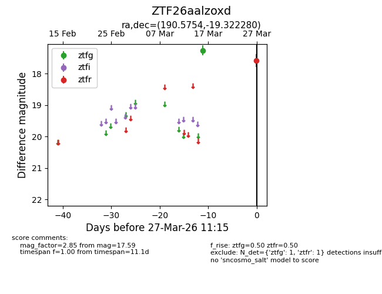
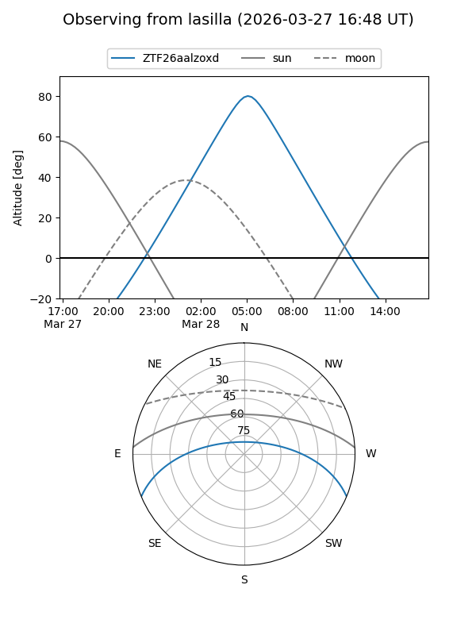
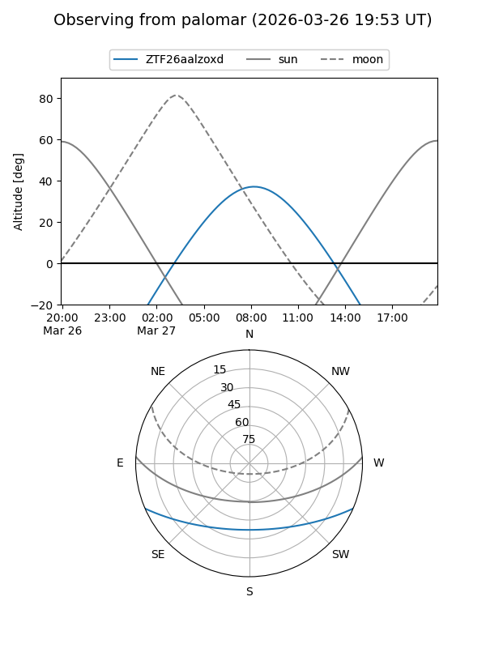

ZTF26aalzoxd
Target ZTF26aalzoxd at 2026-03-27 11:18
Aliases and brokers:
FINK: link
Lasair: link
ALeRCE: link
alt names
ZTF26aalzoxd (ztf,fink_ztf)
Coordinates:
equatorial (ra, dec) = 190.5754,-19.32228
equatorial (HMS+DMS) = 12:42:18.09,-19:19:20.21
galactic (l, b) = (299.9601,+43.49674)
Flags:
Photometry:
last ztfg=17.26, ztfr=17.59
1 ztfg, 1 ztfr detections
Lightcurve

Visibility


Additional plots